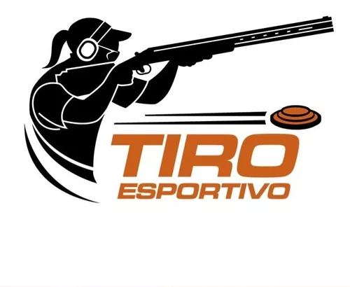
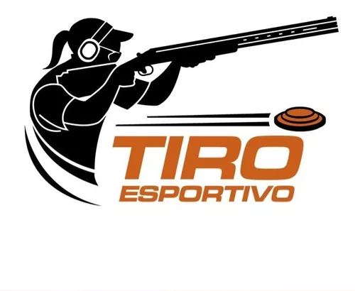

O tiro esportivo é uma modalidade competitiva que envolve o uso de armas de fogo ou de ar comprimido, onde os atiradores visam acertar alvos específicos com precisão.

 

Existem várias modalidades de tiro esportivo, incluindo pistola, carabina, tiro ao prato (trap, skeet), entre outras.